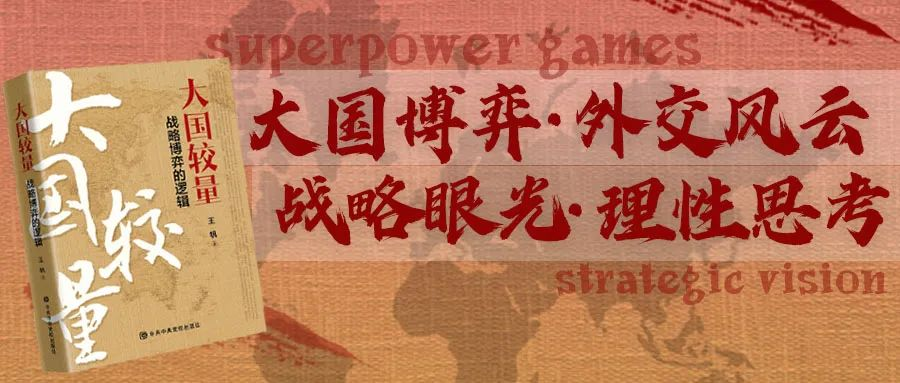
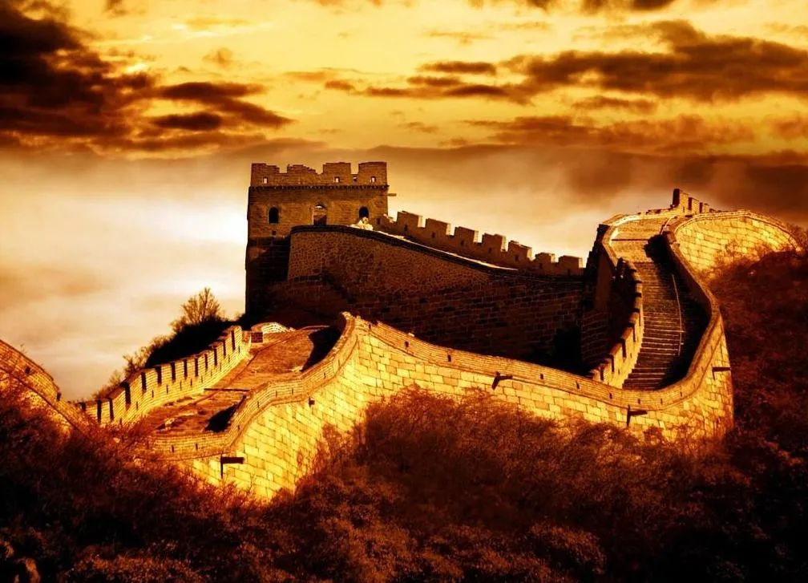
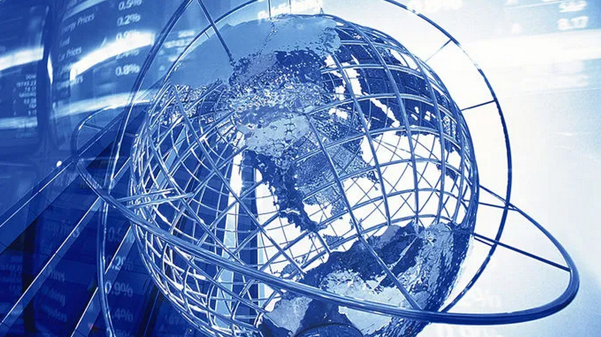
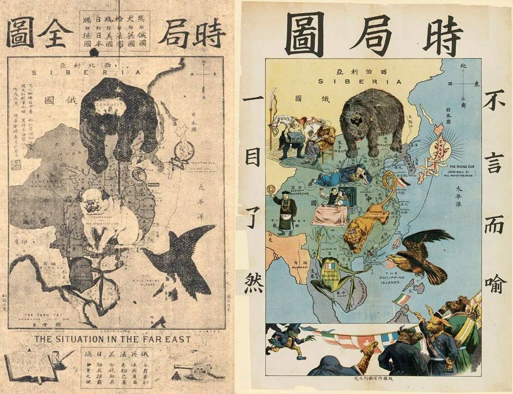
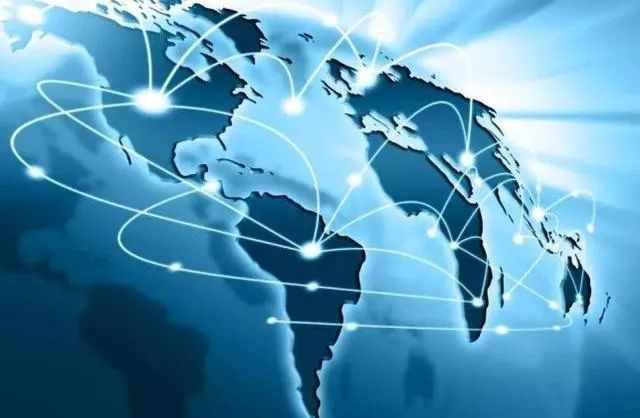

收录于合集
以下文章来源于王帆说 ，作者王帆
王帆说 .
大国较量、国际安全、外交风云、战略博弈

**
**
中国国际意识的演变

中国看世界的过程，也就是国际意识演变，经历了三个阶段：即三视，俯视、仰视，到平视。
国际意识与国家在国际社会中的地位密切相关。中国作为一个悠久历史的古国，其国际意识随着时代的发展呈现出明显的阶段性。
古代中国也即朝贡体系时期，中国人信奉中国为世界的中心，中国是中央帝国，那时的国际意识是表现为唯我独尊、俯视天下。中国看世界的视角是自上而上的，世界事务置于国家事务之下。
近代中国则出现了完全相反的变化，中国不再是世界强国，中国中心说也不复存在。中国积贫积弱，被世界列强瓜分。中国看世界的视角出现了分化，一部分人仍然固步自封，视西方为蛮夷；另一些人则自轻自贱，认为中国将从此一蹶不振；还有一些人则强化了与西方文明为主导的世界的对立态度，至少也要“洋为中用”，从而“以夷制夷”。
改革开放以后，随着中国实力的发展，中国与世界的联系空前紧密，中国重新融入世界，成为国际体系中的一员，中国看世界的视角调整为平视。注重合作与和谐，强调和平与发展。中国人对世界的了解普遍提高，也更为准确。
随着全球化与信息化时代的来临，中国人的国际意识空前强化。
关注世界的发展和国际社会的进步、主张以外交与协商的方式解决冲突与危机、主持正义、勇于承担责任、强调国家间和谐共存的呼声有了大幅提高。
1.古代中国的俯视视角
**
**古代中国也即朝贡体系时期，在夏商周时期形成了以天子为中心的有强烈的等级色彩的朝贡体系，又称“五服制度”。中国人信奉中国为世界的中心，即中国自我中心说——中国是中央帝国。
古代中国人的世界观念可以引用《皇明通记》上的话来说明：“自古帝王临御天下，中国属内以至夷狄，夷狄属外以奉国。”中国人对朝贡制度的喜爱首先是因为朝贡制度迎合了中国人的上国意识，符合古代中国人的世界观念。必须指出，天朝治理的视角是内向的，并无扩张权力的野心，在与外部世界打交道时，也只是自然地将内部伦理秩序向外扩展，作为华夏伦理秩序的自然扩展。美国学者费正清认为：“长期以来，中国的重心在国内深处，通商口岸和条约体系虽在其西方创造者的眼里显得很重要，但对中国人民甚至统治阶级来说，在长时期内始终是他们主要关心的事项中占边缘地位的事项”
“明朝从1405年开始远航，在规模上，中国船队比葡萄牙的大得多，而在航海技能上，即使并不比葡萄牙人优越，也至少可以与他们媲美。然而，中国船队尽管绰有余力，却缺乏绕道非洲前往欧洲的推动力，甚至连建立贸易据点的动力也没有。……中国人完全缺乏欧洲人那种力求扩张的强烈欲望，这一事实就使两者的成果大不一样。……明朝的远航以及他们在达伽马之前50年就停止航海这件事，说明其主要原因是中国的自给自足。”(但直到明朝，中国也没有全球贸易的概念。从这个意义看，中国今天加入世界贸易组织，其意义是十分巨大的，至少说明中国开始树立了全球贸易观)中国从春秋战国时期就开始有“普天之下莫非王土，本土之滨，莫非王臣”的大国意识，从汉代张骞通西域开始，到唐代的玄奘西行取经，到明代的郑和七下西洋，中国人的国际意识逐渐确立。从开始“天玄地黄，我在中央”的自我意识，逐渐扩展了自己的世界视野，但由于中国古代的封建社会在很长时期是东方的富饶之邦，加上独特的地理位置，所以中国始终认为中国就是天下，即使少数开化的知识分子能客观了解西方，也只是将之笼统视为蛮夷。
这种自我为中心的国际意识，在古代中国风行数千年，也是不少帝王锁国自守的思想根源。
那时的国际意识是表现为唯我独尊、俯视天下，是狭隘的。中国看世界的视角是自上而下的，厚往薄来，显示中华大国的威仪，对别国歧视，世界事务置于国家事务之下，使得中国眼中只有中国，没有世界。泱泱大国唯我独尊的狂傲心理制约了国人国际意识的发展。
2.近代中国分化的视角

近代中国则出现了完全相反的变化，中国不再是世界强国，中国中心说也不复存在。19世纪之前，中国一直在东亚相对孤立的地缘政治环境中发展，与世界其他地方相对隔绝。19世纪中期，欧洲列强用坚船利炮将中国强行纳入其主导的国际秩序，从此开始了中国参与国际秩序曲折的互动历程。 中国经历了从天下一统格局向现代意义上的民族国家的转变，即从“中国之世界”向“世界之中国”的转变。 在1840年后，中国开始接受西方先进思想和科学技术，逐渐有了世界的概念，并主张“中学为体，西学为用”，建立总理衙门来处理外交事务。清末的公派学童留洋，学习西方的宪政改革以及各种外事外机构的设立，可以被看作是中国人开始拥有现代国际意识的开端。这一时期中国积贫积弱，被世界列强瓜分。中国看世界的视角出现了分化，一部分人仍然固步自封，视西方为蛮夷；另一些人则自轻自贱，认为中国将从此一蹶不振。中国怎么落后的？ 中国人非常的明白，一个国家他不可能在孤立的情况下获得发展。 中国为此付出了很大的代价，到1820年的时候，当时中国的国民生产总值占到全世界的30%，比美国现在的份额还多，但是1820年以后就不到1%了。鸦片战争前，中国GNP世界第一，但人均产值从宋朝开始一路下滑，清朝人均已经落后于发达国家。鸦片战争最能反映中国的科技能力：当时中国以冷兵器对热兵器，太平天国搞神战，装神弄鬼，讲刀枪不入。中国为什么会发生这样的一个非常明显的倒退，中国当时被边缘化了，中国当时并没有跟上这个发展的道路。2006年是郑和下西洋600年的纪念日。中国在之前都是非常的开放发达，但是为什么突然之间就关闭自己的大门呢？当时在明朝的朱宪宗这个皇帝，当时在中国统治三年，做出一个决定，这个决定对中国来说就是非常的致命，他把所有的海口都关闭。当时郑和下西洋是全球最大船队，当时的船队是1000个水手，当时是非常大的船队，这样的优势就逐渐的消失了，最后中国受到外来的屈辱。甲午海战前，日本海军军官曾到北洋舰队参观，其中一个将领发现北洋舰队的一个军舰的炮管上布满灰尘，事后说了一句中国海军必败无疑。这里的另一个核心问题是中国没有海洋贸易，因而根本不重视海权。所以从开放到关闭，有这样一个过程。 现在我们应该重新来开放国家，中国不会再重新关闭自己的大门，因为中国闭关锁国的代价太大了。
虽然在二十世纪二十年代，中国诗人郭沫若曾写诗《地球 我的母亲》，显现出超前的气势和国际视野，但那时候的中国在世界上的地位是十分卑微的。
3.当代中国的平视视角
****
新中国成立后，中国加入社会主义阵营，这在客观上导致了以美国为首的西方阵营的孤立，由于国际形势的变化和中国外交政策的调整，更加剧了中国的孤立局面，使中国人对国际形势有了消极的看法，中国没有更多地参与国际活动，中国人对世界的认识是肤浅、封闭甚至是扭曲的。 改革开放后，越来越多的中国人踏出国门，走向世界，西方发达的社会给中国人以深刻印象。 认识与期待中出现的反差导致了盲目崇拜外国的现象，出现对外部世界的认识的另一种扭曲，即全盘西化的思想。 但是随着中国实力的发展，中国与世界的联系空前紧密，中国重新融入世界，成为国际体系中的一员，中国看世界的视角开始出现调整。注重合作与和谐，强调和平与发展。中国人对世界的了解普遍提高，也更为准确。随着全球化与信息化时代的来临，中国人的国际意识空前强化。中国更加积极地关注世界的发展和国际社会的进步、主张以外交与协商的方式解决冲突与危机，主持正义、勇于承担责任、强调国家间和谐共存的呼声也有了大幅提高。新世纪尤其是2010年以来，中国GDP跃升世界第二，超过了自近代以来一直居于亚洲第一的日本。中国对世界经济的贡献超过了30%。中国和美国成为世界上唯一的两个GDP超过十万亿级别的经济大国。中国对世界和平和繁荣发挥着越来越大的建设性作用。世界上包括一些发达国家在内期待着中国在全球化时代发挥更大的引领作用。中国已经发展中国家的榜样，成为世界范围内举足轻重的国家。 我们终于可以以平等的姿态昂首阔步地走向世界民族之林，平视这个世界。 这是一个历史性的跨越，是中国复兴的象征。中国人为自己的勤奋智慧而自豪，为自己在短短的几十年内完成西方大国需要一百年才能完成的富强目标。当然，中国永远不称霸，永远不搞以强凌弱那一套，永远坚持大小国家一律平等，并在这一原则指导下，推动共商共建共享的人类命运共同体的到来。 未来的中国需要放眼世界。 遍览中国的经史典集，我们可以发现认知世界的一个清晰层次结构：家、国、天下，国，即政权，并不是中国人的认知终点，其上还有天下，天下这个概念具有延展性，即只要中国能发现、接触的地域，都在天下的范围内。从“天朝上国、八方来朝”的国际意识到“求同存异、谋求和平、共同发展”的国际地位的新认识，需要一种清晰的视角和稳定的立场、一种发展的和修正的眼光。在经济全球化的时代，全球资源打破国家的界限，进行优化配置，这种生产方式必然会产生与之相适应的国际意识，而中国人固有的天下观，经过现代意识的改造，则可以披挂上阵，让中国更好更快地融入国际社会。 摆正位置，走一条厚积薄发的国际化道路，是中国人民现阶段做出的正确选择。 过去有人讲，冷眼向洋看世界，现在这种置身度外的做法已经不行了。全球化的影响比多极化要大得多。全球化是世界首要大趋势。
从发展看，有四个特点：1）超出经济，向政治安全领域漫延，以前写经济全球化，现在已超出经济领域；2）南北差距突出，在扩大；3）发展中国家内部分化加剧，情况复杂，有些国家抓住机遇，有些则未抓住；4）全球化对发达国家负面影响开始呈现。一个是发达国家受到发展中国家或地区的挑战增多，GNP比重发达国家下降。发展中大国GDP比重由10.54%上升为11.21%。
4.中国抓住了全球化的机遇

应该说，中国抓住了全球化的机遇。
在经济全球化的时代，一国获益并为此自行其是是违背这个时代的发展趋势的，何况许多人类共同面临的问题，诸如环境保护、消除饥饿、防止流行疾病的漫延、反对核扩散等等，都是仅凭一国之力难以解决的。
在当今时代，各国间的相互依存已经普遍加深，形成了“你中有我、我中有你”的局面。首先，信息网络及国际新闻媒介可以及时同步地提供世界上发生的重大事件最新动态，无论是否觉察，实际上每个人都在切实感受着世界的每一次脉动，出现了社会学家所说的在场与缺席的交叉，时空的缩陷.
其次，每个人都在享受着人类共同创造的文明成果。全球生产链产生了不可割裂的共同性.第三，拥有国际意识才能使人视野开阔、意向高远，对合作和人类整体的稳定与繁荣产生更高的期待。
在全球化时代背景下，国与国之间的联系性和相互影响都达到了前所未有的程度，而且这种趋势是不可逆转的。 在相互依存日益加深的情况下，助人如助已，互助才能互利。开放使原有的国界成为了合作的连接线而不是隔绝的樊篱。只有放眼世界，才能更好地了解自己。才能更有信心地为中国和人类发展做出更大贡献。
作为一个负责任的大国， 中国必须摆脱小富即安的心态，要为地区事务和国际事务做出更大的贡献。 作为一个新世纪的中国公民，我们要意识到自己不仅仅是中国人、亚洲人，也是人类社会的一分子。